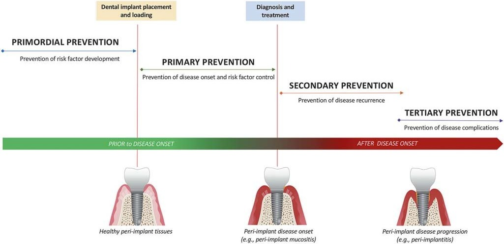
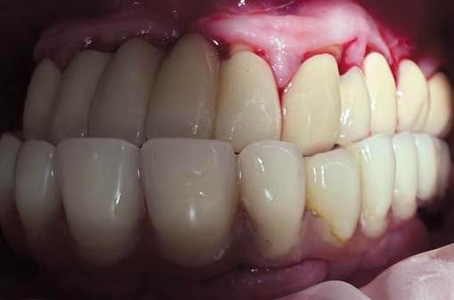
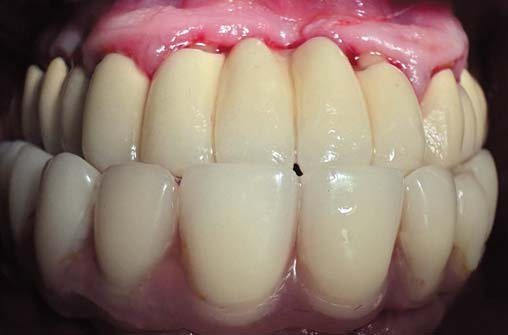
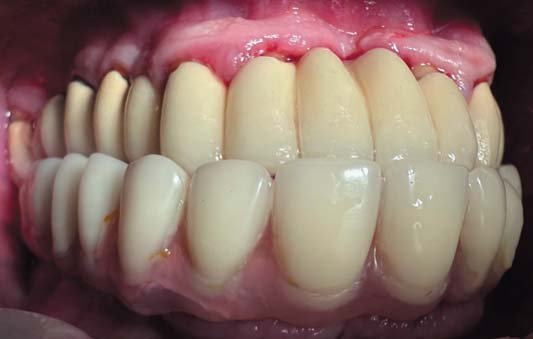
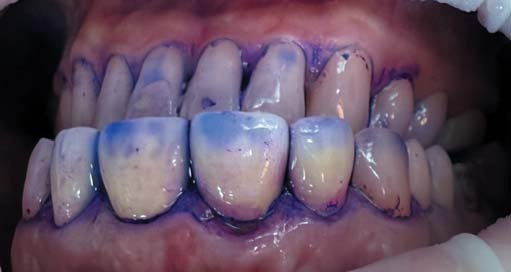
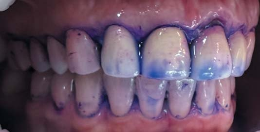
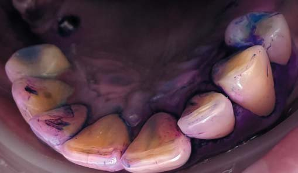

Профілактика · журнал «ДентАрт» 2025 №2
ДНК гігієніста: профілактика периімплантитів
HYGIENIST DNA: PERI-IMPLANTITIS PREVENTION
Коли людина втрачає власні зуби, їх можна замінити дентальними імплантатами — це гарна новина для пацієнта та відповідний обсяг роботи для лікаря. При некоректному індивідуальному та професійному догляді людина може втратити імплантати у перший же рік — це погана новина для них обох. Біоплівка мріє оселитися на новеньких конструкціях у ротовій порожнині, і вона неодмінно це зробить, дозволу ні в кого не питатиме. Чи можливо клініцистам взяти її під контроль та профілактувати виникнення периімплантних захворювань? Чи це потяг в один кінець і надії немає? Будемо разом розбиратися.
Імплантація сьогодні є однією із найбільш затребуваних маніпуляцій у стоматології. Однак із нею пов'язано багато ризиків, наприклад периімплантит. Завдяки сучасним підходам та дослідженням етіологія і патогенез периімплантиту стали більш зрозумілими. Про причини і методи профілактики цієї патології ми сьогодні й поговоримо.
Коротко про те, що вам, шановні колеги, варто про мене знати: я пристрасно закохана у профілактику (більше хіба у свого чоловіка). Вважаю своєю місією транслювати любов до якісного догляду за ротовою порожниною. Щоденно створюю культуру красивих взаємовідносин людини з її зубами та яснами. Закохую людей у здоров'я на все життя. Хоча чисті зуби — це не лише про здоров'я і красу, це ще й про любов до себе, турботу, повагу та відповідальність за якість свого життя і як наслідок — його тривалість.
Бачу свою роботу як безмежний океан і щодня пірнаю у нього настільки глибоко, наскільки це можливо. Сьогодні беру вас із собою на глибину. Отже, пірнаймо!
Актуальність
Сьогодні про лікування периімплантитів говорять усі, а тонких струн душі профілактики торкаються лише одиниці. Імплантологія у світі настільки стрімко й динамічно розвивається, що питання якісної індивідуальної та професійної гігієни має перманентно висіти у повітрі, наче дамоклів меч, постійно нагадуючи клініцистам про незворотність периімплантитів та ряд ускладнень, які вони тягнуть за собою.
Профілактувати не можна лікувати (тут навмисно немає коми, адже кожному із вас доведеться самостійно ухвалювати рішення і нести за нього відповідальність). А де ставите кому ви?
Розпочнімо наш «заплив» із відповіді на одне дуже просте запитання: «Чи схожа робота у вашій клініці на роботу оркестру?». Чи всі процеси та етапи прийому пацієнтів злагоджено вступають у гру один за одним, як музичні інструменти, з метою створити довершений твір? Чи все завжди іде, як по нотах? Чи присутні у цьому процесі хаос та спонтанність, чи навпаки, усі складові процесу доведені до автоматизму? Просто кожен дайте відповідь собі на це запитання і запишіть її.
Хто диригент у вашій клініці? Ортопед, головний лікар, хірург, терапевт, пародонтолог? У кожного, звісно, буде своя відповідь на це запитання, але... Хто б не був диригентом у вашому оркестрі, першу скрипку віддайте гігієністові! Чому так? Бо жодна якісна маніпуляція не може бути, ба більше, не має права бути виконана у ротовій порожнині, обтяженій бактерійною біоплівкою. Тим паче, коли ми говоримо про таку серйозну маніпуляцію, як дентальна імплантація. Якщо в клініці взяти собі за правило, що, умовно, «вхід» у будь-яку маніпуляцію відбувається лише крізь двері в кабінет гігієніста, то велика частина непотрібних проблем та постманіпуляційних ускладнень просто нівелюється.
Основна стратегія превенції периімплантиту, на мою думку, — це якісна профілактика ще задовго до встановлення імплантата! Адже працювати над профілактикою периімплантиту, коли імплантат уже встановлений, — дещо запізно. Якісна профілактика розпочинається ще задовго до... Що ж включає якісна профілактика? Нумо розбиратися.
Імунна відповідь організму на зубні відкладення може бути непередбачувано агресивною. Нема чіткої кореляції між кількістю зубних відкладень та реакцією імунної системи на них. Саме тому експерименти з біоплівкою та імунною відповіддю можуть коштувати організму надто дорого. Мабуть, усі ви знаєте про дослідження, яке протягом 15-ти років ще у 1990-х проводили на чайних плантаціях Шрі-Ланки і виявили, що деякі люди просто схильні до розвитку пародонтиту: при одній і тій самій кількості зубних відкладень, за одних і тих же умов, при відсутності належного догляду за ротовою порожниною в одних людей розвивається пародонтит, а у інших — ні. Річ, власне, в імунній відповіді, в індивідуальних особливостях окремо взятого організму, який між симбіозом та дисбіозом обирає останнє і запускає деструкцію кісткової тканини. Це не ендотоксини «з'їдають» кістку, це — непередбачувана імунна відповідь організму. У когось вона агресивна, в когось — помірна або й взагалі мінімальна.
Безумовно, кількість зубних відкладень має значення, бактерійні комплекси, зокрема, червоний, ви всі його добре знаєте, мають значення. Але найважливіше — це, власне, те, як організм конкретної людини реагує на те все, що міститься в ротовій порожнині. Ми не можемо вплинути на імунну відповідь. Ми не можемо її спрогнозувати чи скоригувати. Ми можемо лише взяти біоплівку та кількість зубних відкладень під жорсткий регламентований контроль і таким чином впливати на превенцію. Наше завдання — зруйнувати біоплівку, вплинути на фактори, які формують її, запобігти процесу виникнення запалення, щоб потім не довелося лікувати.
Отже, звернімося до гайдлайну EFP. Що він нам каже про профілактику периімплантиту? Наголошує на важливості примордіальної підготовки. А полягає вона в тому, що ми повинні навчити пацієнта ідеально чистити зуби, навіть якщо в ротовій порожнині залишається мала кількість зубів або ж ви взагалі плануєте їх видаляти. Нехай він їх чистить і навчиться робити це ідеально до того, як на їх місце прийдуть імплантати. Якщо пацієнт звернувся за імплантацією і не чистив свої зуби, то й імплантати не чиститиме, а їх чистити складніше і довше. Імплантацію ми проводимо на 3-ому або 4-ому кроці періотерапії! Не на першому! Недостатньо просто зняти відкладення. Надважливим є інфекційний контроль. Надважливим є навчити пацієнта ідеально чистити зуби, перевіряти це шляхом постійних контрольних візитів і лише після повторної оцінки, коли індекси гігієни дозволяють, переходити до імплантації. Якщо пацієнт втратив зуби, то є велика вірогідність, що саме через пародонтит.

Отож, змоделюємо ситуацію, що приходить пацієнт із потребою у дентальній імплантації. Коли і на якому етапі цю імплантацію проводити? В ідеалі — на 3-ому, 4-ому.
А як це є на практиці? Погляньмо правді в очі… Багато хто зараз впізнає подібні підходи у своїх клініках. Приходить пацієнт, не має чим жувати, після консультації йому роблять гігієну і в перший же тиждень, доки все «умовно» чисто, проводять імплантацію. Після імплантації приблизно 4 місяці пацієнт як уміє, так і чистить, у кращому випадку перед встановленням гінгівоформерів йому знову зроблять гігієну, а може, і не зроблять, далі пацієнт йде на протезування і переважно зникає... З чим він потім повернеться в клініку? З мукозитом чи вже з периімплантитом — це така собі лотерея… Тут важливо передусім змінювати підходи, потрібно бути тим голосом у своїй клініці, який намагатиметься змінити систему.
Отож, як зменшити ризики?
Іти за руку з гігієністом через усі фази дентальної імплантації.
Як каже нам уже не нова «нова класифікація» захворювань тканин пародонта та периімплантних тканин, розроблена під час світової робочої конференції з пародонтології World Workshop у Чикаго в листопаді 2017 року:
- існує чіткий взаємозв'язок між мукозитом та біоплівкою;
- периімплантний мукозит — це зворотний процес, який займає 3 тижні лікування;
- індекс кровоточивості — ключовий момент у діагностиці периімплантних захворювань;
- відсутність регулярної підтримуючої терапії у пацієнтів із периімплантним мукозитом пов'язана з ризиком виникнення периімплантиту;
- накопичення біоплівки, куріння, надлишок цементу — основні етіологічні фактори периімплантних захворювань;
- механічний контроль біоплівки пацієнтом — значний профілактичний захід;
- професійне втручання, власне, механічна обробка поверхонь, продемонструвала клінічне зменшення запалення;
- розміщення імплантатів і ортопедичних конструкцій на них не повинно перешкоджати механічному очищенню (професійному та індивідуальному).
Які тканини можна вважати здоровими?
- Відсутні клінічні ознаки запалення;
- відсутні кровотеча та гноєтеча при зондуванні;
- глибина зондування не збільшилася у порівнянні з попереднім обстеженням;
- відсутність втрати кістки більше, ніж у результаті первинного кісткового ремоделювання.
Зондувати імплантати чи ні?
Клінічне зондування навколо остеоінтегрованого імплантата не чинить шкідливого впиву на м'які тканини і, як наслідок, не ставить під загрозу довговічність імплантатів. Повне відновлення борозни після зондування відбувається вже на 5-ий день, гістологічно від зондування не буде й сліду. Це доводять численні дослідження. Просто погляньте у доказову базу, і годі, нарешті, сперечатися стосовно цього у своїх клініках. Імплантати потрібно зондувати. Якщо ви цього не робите, то ви не надаєте якісної діагностики своєму пацієнту. Отже, імплантати ми зондуємо. І не будемо більше порушувати це питання, будь ласка. 🙂
Вимоги до імплантата та супраструктури
- Правильна позиція імплантата;
- супраструктура у формі тюльпана;
- безперешкодний доступ для інтердентального очищення для зменшення ризиків виникнення периімплантиту.
Важливо, щоб не було так званих «нависаючих балконів», а був якісний контакт обов'язково.
Що важливо перед імплантацією?
- Оптимальне планування в 3D позиціюванні;
- достатня товщина щічної/лінгвальної кістки;
- адекватна мезіодистальна відстань між імплантатом і коренем сусіднього зуба / імплантатом для якісної гігієни.
Що важливо після імплантації?
- Первинне зондування протягом 3 місяців після встановлення;
- повторне зондування при кожному обстеженні;
- записуємо зондування по колу в 6 точках та BOP;
- робимо прицільну рентгенограму.
Якою повинна бути конструкція?
- Мати хороший доступ для предметів гігієни;
- адекватний доступ для моніторингу, зондування та механічного видалення зубних відкладень;
- контур протеза з випуклою поверхнею, уникати сідловидної форми та гострих кутів.



Фактори ризику
- Біоплівка навколо імплантата;
- тяжкий пародонтит в анамнезі;
- поганий контроль зубного нальоту;
- відсутність системи контрольних візитів, належної мотивації та графіка підтримуючої терапії;
- куріння;
- цукровий діабет.
Ми знаємо сьогодні, що пацієнти з пародонтитом в анамнезі, які не отримують підтримуючої терапії, мають найбільший ризик ускладнень та ризик втрати імплантата. За наявності дентальних імплантатів професійна гігієна здійснюється кожні 3 місяці з обов'язковим контролем рівня домашньої гігієни, яка повинна бути просто на найвищому рівні! Немає значення, в яку кістку встановлюють імплантат — нативну чи ту, на якій попередньо робилася кісткова пластика, вони всі потребують бездоганної гігієни для того, щоб прослужити довго та надійно.
Обережно, глибина!
Якщо немає ознак запалення, відсутні кровоточивість, набряк, почервоніння, ексудація, пацієнта ніщо не турбує, і єдине, що вас насторожує, — це глибина зондування 4–6 мм, то не поспішайте з висновками. Спостерігайте. Викличте повторно пацієнта через місяць, потім через три, і якщо глибина зондування залишиться такою ж або зменшиться, то саме для цього пацієнта це буде варіантом норми і такий імплантат можна вважати відносно здоровим. У жовтні 2024 року у Львові відбувався Perio Congress, організований UAP, на якому з доповідями виступало багато лекторів зі всього світу і таких кейсів, про які ми зараз говоримо, було дуже і дуже багато — коли зондування в ході експлуатації імплантата 4–6 мм, але жодних проблем із ним немає. Суть цього меседжу — не поспішайте з висновками! Завжди доцільно кілька разів перевірити.
Діагностика мукозиту
- наявність кровотечі/гноєтечі при лагідному зондуванні із збільшенням глибини зондування або без нього у порівнянні з попереднім обстеженням;
- відсутня втрата кістки більше, ніж після первинного кісткового ремоделювання;
- можлива гіперемія, набряк (якщо є набряк, то може збільшуватися глибина зондування через зниження спротиву тканин при зондуванні, але глибина зондування збільшується не через втрату кістки, а власне через набряк і зниження спротиву. Тому може виникати відчуття, наче ви «провалюєтеся» під час процедури професійної гігієни).
Діагностика периімплантиту
- наявність кровотечі/гноєтечі при лагідному зондуванні;
- збільшення глибини зондування у порівнянні з попереднім обстеженням та/або дегісценції;
- рентгенологічна втрата маргінальної кістки в порівнянні з попередніми обстеженнями.
А якщо перед вами пацієнт, який прийшов уперше? Ви не знаєте, де, коли і як була проведена імплантація, попередні обстеження відсутні, пацієнт не може нічого конкретизувати. Тоді беремо за основу:
- наявність кровотечі/гноєтечі при лагідному зондуванні;
- глибина зондування понад 6 мм;
- рівень кістки на відстані понад 3 мм відносно самої коронкової частини внутрішньокісткового компонента імплантата.
Яка діагностика імплантата вважається якісною?
- Анамнез;
- огляд та пальпація м'яких тканин у ділянці імплантата;
- зондування на предмет кровоточивості, гноєтечі, глибини кишень;
- прицільний знімок.
Гвинтова чи цементна фіксація?
У 90 % випадків обирають гвинтову, а цементну — у 10 %, від цементної фіксації давно відходять. Цих 10 % цементної фіксації — це здебільшого у випадку з премолярами, коли маленька анатомічна форма.
Ну, а зараз поговоримо про ту, кому абсолютно байдуже, який імплантат у ротовій порожнині, яка країна-виробник і який лікар його встановлював… Її Величність біоплівка. Колонізація поверхні імплантата розпочинається через 30 хвилин після встановлення. Тобто після того, як встановили в клініці імплантат, пацієнт вийшов, зателефонував дружині, сів у машину, рушив з місця — і вже на півдорозі додому його новенький імплантат колонізують перші групи бактерій, а через 2 тижні, коли він прийде знімати шви або на огляд, там уже сформувалася повноцінна біоплівка. Пацієнт про це не знає, а досить часто і лікар теж. Якщо було негайне навантаження, пацієнт боятиметься чистити конструкції, тому дуже важливо одразу відправити цього пацієнта навіть з тимчасовими конструкціями, коли все загоїлося, до гігієніста, щоб показати пацієнтові всі нюанси якісного догляду, показати в самій ротовій порожнині, як правильно чистити, пацієнт мусить власноруч спробувати. Лише тоді це спрацює.
Конструкціями ми можемо збільшувати або зменшувати кількість біоплівки. Якщо не донести людині, що її найбільший ворог — це біоплівка, і не зробити це ще на етапі первинної консультації, то жодна марка виробника не матиме значення, чекайте проблем…
Я люблю зображати гігієніста як каратиста із чорним поясом. Бо це, власне, передає усю складність роботи з імплантатами. Специфіка позиціонування імплантата, конфігурація супраструктур буває різною, інколи не найвдалішою, що значно ускладнює доступ апаратів та інструментарію. Тому, коли ми говоримо про гігієну на імплантатах, то мова йде про справжню майстерність. Тому вам теж потрібен чорний пояс.
Кожному, хто працює з імплантатами, потрібен чорний пояс. Де його взяти? GBT-протокол — ваш чорний пояс.

Якщо ми проаналізуємо наукові дослідження щодо впливу всіх найпоширеніших порошків, то побачимо, що жоден з них не є досконалим, усі порошки в тій чи іншій мірі залишають мікроподряпини чи шорсткості на поверхні імплантатів. Окрім еритритолу. Коли я була на стажуванні у Швейцарії, то дізналася, що у них є науково-дослідний інститут, де працює технолог, доктор наук, який займається лише порошками, їх дослідженнями, розробками. Він аналізував усі порошки, наявні на світовому ринку, і до всіх мав певні претензії щодо впливу на поверхні та безпеки. А еритритол він називає вінцем досконалості, ідеальнішим за ідеальне.


Дуже важливо до та після імплантації навчити пацієнта правильно чистити зуби, різноманітними техніками (Чартера, Басса класичною та модифікованою, Фонесса, комбінованими техніками) і переконатися, що він їх засвоїв. На хірургічній фазі ми на 14 днів призначаємо хірургічні щітки, вони всі зазвичай мають 12000 щетинок, схожих на котячу лапку. Їх багато хто так і називає. Хлоргексидином можна користуватися 14 днів, не більше, якщо ми говоримо про концентрацію 0,2 % чи 0,12 %, щоб уникнути дисбіозу ротової порожнини. Якщо ж ми говоримо про ситуацію, коли є, скажімо, літні пацієнти зі зниженими когнітивними і відповідно — мануальними здібностями, тоді можна взяти концентрацію 0,06 % і призначати близько місяця часу. Відсоток менший — можна довше.
Акцентуйте увагу пацієнтів на тому, що час експозиції повинен становити 60 секунд. Якщо у ротовій порожнині збережена велика кількість природних зубів, а імплантація була проведена лише в якійсь певній ділянці, то всі інші зони ми чистимо звичайною щіткою, а зону імплантації — хірургічною.
У разі негайного навантаження рекомендації такі ж, як і після хірургічної фази. Єдине, що, безумовно, є низка вимог до ортопедичних конструкцій, ортопеди в клініці про це знають, все має легко, без проблем, очищатися, промиватися і не тиснути на м'які тканини.
На період до заміни на постійну конструкцію пацієнтові потрібна щітка з оральним вигином, щітка м'яка із витонченими щетинами; додаємо ніжні, м'які ополіскувачі та кисневмісні продукти. Для одноетапної імплантації з негайним навантаженням чи для класичної двоетапної методики, коли поставили гінгівоформери, дуже важливо, щоб пацієнт теж знав, як за ними доглядати. Навколо цих супраструктур дуже легко і швидко накопичується наліт, і якщо його вчасно не елімінувати, то мукозит довго чекати на себе не змусить. Монопучкова щітка в поміч. Постійні конструкції повинні безпроблемно очищатися, усі з'єднання і зона прилягання — ідеально заполіровані. Там, де нема гладкості, — є ретенційний пункт для накопичення біоплівки. На цьому етапі додаємо дворядну щітку для очищення зони прилягання, самі конструкції чистимо щіткою середньої жорсткості.
Часто конструкція у нас не цирконієва, не всі пацієнти платоспроможні, тому часто це пластмаса. Як поводиться пластмаса у ротовій порожнині, всі ми знаємо. Вона буде вбирати в себе барвники з їжі та напоїв. Тому щітку беремо жорсткішу, не боїмося. Залишаємо йоршики, ізіпіки, щітку з оральним вигином, бо під'язикову ділянку, ці так звані піднутрення, ніщо не зможе якісно очистити, лише ця щітка.
Ми не використовуємо суперфлоси для очищення імплантатів. Є достатня кількість досліджень, які говорять про те, що частинки нитки можуть розволокнюватись і залишатися в ділянці витків, проштовхуючи відкладення вглиб, спричиняючи запалення і низку можливих проблем та ускладнень.
Єдина ділянка, де ми можемо застосовувати суперфлос, — це для очищення промивної частини, особливо в під'язиковій ділянці, попередньо змочивши нитку в ополіскувачі, таким чином вона буде ніжнішою до слизової оболонки. Ось для очищення цих так званих піднутрень використовувати суперфлос можемо без жодних проблем. Але не для очищення самих імплантатів!
Урок гігієни проводимо через 2 тижні. Запросіть пацієнта на цей урок гігієни. Буде можливість перевірити рівень гігієни та провести корекцію за потреби.
Важливо! Не намагайтеся присоромити, не критикуйте, не оцінюйте людину та її похибки. Просто дайте чіткі дружні поради і рекомендації, з добром та емпатією. Знайдіть той місток комунікації, який дозволить достукатися і досягти успіху. Дуже важливо поважати людину, яка до вас прийшла, поважати її болі, її поразки та невдачі, які призвели до тієї ситуації, з якою вона зіткнулася і до вирішення якої ви будете причетні. Делікатність і акуратність повинні супроводжувати вас у всіх маніпуляціях та в комунікаціях. Лише так можна досягти успіху як у загоєнні, так і в зміні гігієнічних звичок пацієнта.
Антимікробні гелі та лаки як варіант додаткового захисту і контролю інфекції мають використовуватися. У лаків, які містять антимікробні компоненти 1 % хлоргексидину та 1 % тимолу, після висихання концентрація збільшується у 10 разів, вони прозорі, вологостійкі, швидко сохнуть, легко наносяться, це чудовий захист коронок і мостів з фіксацією на імплантатах.
Чому саме GBT?
Це максимально комфортний та малоінвазивний підхід у світі профілактики, більше жодних гумових полірів, жодних торцевих щіток та полірувальних паст, максимальна ергономіка при мінімальних затратах фізичних сил, менша потреба у застосуванні ручних інструментів (лише як варіант крайньої необхідності у певних клінічних ситуаціях), періонаконечник та no-pain модуль ультразвуку закривають усі потреби кожного клінічного випадку.
Пам'ятаєте, колись була така реклама цукерок: гасло «Замість тисячі слів» — і на екрані з'являлася коробка цукерок? Ось так і тут — замість багатьох апаратів та інструментів — досконале творіння, GBT-протокол.
Нині абсолютно змінилися бачення і підходи до видалення зубних відкладень. Видалення зубного каменю сьогодні — не основна мета, як це було колись. Камінь — це фактор росту біоплівки. У багатьох статтях можна побачити словосполучення «мікробні будинки». Наше завдання — зруйнувати ці будинки, але першопричина, корінь зла, так би мовити, — це завжди біоплівка. Тому GBT — це якраз філософія guided biofilm therapy, яка нас вчить, як взяти біоплівку під контроль, як її приборкати та осідлати.
GBT сьогодні позиціонується як game-changer — той, що повністю змінює правила та умови гри у світі профілактики і лікування стоматологічних захворювань. Зазвичай урок гігієни для пацієнта, якщо він взагалі проводиться, відбувається за залишковим принципом наприкінці прийому, після процедури гігієни, а якщо ще й час професійної гігієни затягнувся і в коридорі вже очікує наступний пацієнт, то кілька слів швидко скажуть пацієнтові, і на цьому все. Тому GBT-протокол не просто так називається game-changer, адже тут урок гігієни та мотивація пацієнта до якісної ретельної гігієни відбуваються всередині процесу, одразу після індикації біоплівки. Філософія GBT-протоколу полягає в тому, що зменшена тривалість самої процедури, оскільки полірування щітками та пастами замінено на повітряно-абразивну технологію, тому умисно залишено більше часу для якісної взаємодії з пацієнтом у контексті уроку гігієни. Просто подумайте про це, як ви хочете взаємодіяти з пацієнтом: за залишковим принципом, швидко, наприкінці процедури, коли під дверима вже очікує наступний пацієнт, чи якісно, плавно і з залученням пацієнта у процес?
Які основні кроки GBT-протоколу?
- Оцінка та контроль інфекції;
- індикація нальоту;
- мотивація;
- Airflow max;
- Perioflow max;
- Piezon;
- контроль;
- повторний візит.
Є дослідження, які свідчать про те, що коли ми працюємо ультразвуком з відповідними насадками згідно з клінічною ситуацією, здійснюємо ультразвукову обробку із силою 50 г протягом 78 секунд на кожному зубі, то кількість ліпополісахаридів скорочується до рівня здорових пацієнтів. Тому працювати ультразвуком та повітряно-абразивною технологією, не застосовуючи зоноспецифічні кюрети, — це нормально, це має під собою доказове підґрунтя. Немає на сьогодні досліджень, які б нам сказали, що кюрети працюють краще за ультразвуковий метод інструментальної обробки або ж навпаки. Є дуже категоричні клініцисти, які нав'язують думку про те, що лише кюретами і тільки ними можна здійснити якісну інструментальну обробку, але це не так. Є дослідження, які нам говорять про те, що тип і спосіб інструментації не мають ключового значення. Має значення сама механічна інструментація як ефективний спосіб досягнення інфекційного контролю.
Ви можете працювати так, як вам зручно, як це працює саме у ваших руках. Ви самі обираєте філософію, згідно з якою працюєте.
Висновки
Профілактувати не можна лікувати — обирайте самі, де ставити кому! У випадку, коли лікування периімплантиту настільки важке, складне і головне — непрогнозоване, найкращим варіантом вибору буде саме ПРОФІЛАКТИКА! Про лікування говорять багато, про профілактику — одиниці.
У моїй ідеальній країні світу немає карієсу, пародонтиту, периімплантиту. Мабуть, тому, що я вірю в силу профілактики, сама живу так і всіх закликаю.
І ця віра дає мені наснагу працювати дентальною гігієністкою і безмежно любити свою професію! Усім добра!
Література
- David Herrera X., Tord Berglundh, Frank Schwarz, Iain Chapple, Seren Jepsen, Anton Sculean, Moritz Kebschull, Panos N. Papapanou, Maurizio S. Tonetti, Mariano Sanz. Prevention and treatment of peri-implant diseases-The EFP S3 level clinical practice guideline. 04 June 2023.
- Schubert A., Friebel J. M., Bunz O., Sasse C., Bürgers R., Wassmann T. Aggregatibacter actinomycetemcomitans induces biofilm formation of Streptococcus sanguinis on titanium implants. Int J Implant Dent. 2025 Apr 3;11(1):29. doi: 10.1186/s40729-025-00616-8. PMID: 40180769 — PubMed.
- Rossana Izzetti, Chiara Cinquini, Marco Nisi, Michele Covelli, Fortunato Alfonsi, Antonio Barone. Influence of Prosthetic Emergence Profile on Peri-Implant Marginal Bone Stability: A Comprehensive Review. 2025 Mar 17;61(3):517. doi:10.3390/medicina61030517 — PubMed.
- Heitz-Mayfield L. J. A., Salvi G. E., Mombelli A., Loup P., Heitz F., Kruger E., et al. Supportive peri-implant therapy following anti-infective surgical peri-implantitis treatment: 5-year survival and success. Clin Oral Implants Res. 2018;29(1):1–6. — PubMed.
- Jepsen S., Berglundh T., Genco R., Aass A. M., Demirel K., Derks J., et al. Primary prevention of peri-implantitis: managing peri-implant mucositis. J Clin Periodontol. 2015;42 Suppl 16:S152-157. — PubMed.
- Costa F. O., Takenaka-Martinez S., Cota L. O. M., Ferreira S. D., Silva G. L. M., Costa J. E. Peri-implant disease in subjects with and without preventive maintenance: a 5-year follow-up. J Clin Periodontol. 2012;39(2):173–181. — PubMed.
- Roccuzzo M., Bonino F., Aglietta M., Dalmasso P. Ten-year results of a three arms prospective cohort study on implants in periodontally compromised patients. Part 2: clinical results. Clin Oral Implants Res. 2012;23(4):389–395. — PubMed.
- Menini M., Delucchi F., Bagnasco F., Pera F., Di Tullio N., Pesce P. Efficacy of air-polishing devices without removal of implant-supported full-arch prostheses. Int J Oral Implantol (Berl). 2021 Nov 2;14(4):401-416. PMID: 34726849. Clinical Trial.